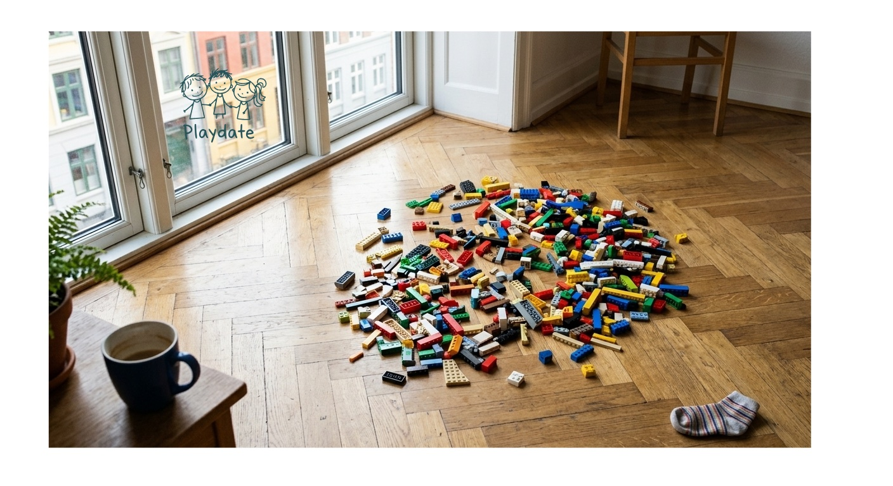

Lørdag formiddag, og ingen har spurgt endnu
Om tærsklen for en lørdags-playdate, og hvorfor den er højere end den fortjener.

Lørdag kvart over ni. Et barn sidder på gulvet med en bunke LEGO, kigger op og spørger: "Skal vi lege med nogen i dag?"
Forælderen tænker på, hvem der kunne skrives til.
Der er tre-fire familier, hvis børn det rigtig gerne må være. Numrene ligger i telefonen. Et par af dem måske endda på WhatsApp. Men spørgsmålet sidder fast et sted mellem "det er vel også lidt sent at skrive nu" og "de har sikkert allerede planer" og den lille tøven ved at skrive til én specifik forælder, når det lige så godt kunne være en anden familie, der havde en rolig formiddag.
Beskeden bliver ikke sendt. Barnet sender den heller ikke selv, for det er fire år gammelt.
Klokken bliver elleve. Klokken bliver halv tolv. Det bliver til frokost derhjemme og en tur i nærmeste park, hvor ingen kendte dukker op. Alt er fint. Men det, barnet faktisk spurgte om klokken ni, skete ikke.
Det her er det problem, Skal vi lege? blev lavet til.
Det er ikke et helt bookingsystem eller en ny kalender, der skal vedligeholdes. Bare et sted, hvor man som forælder kan lægge op, at man er hjemme lørdag fra ti til tolv, at man har en fireårig, der elsker at bygge LEGO, og at man gerne tager imod. Og så ser man, hvem der melder sig.
Det er den måde, playdates bliver til, når det lykkes: en tråd i en mor-gruppe på Facebook, en kort besked, et tilfældigt møde i børnehaven. Det er bare ikke den måde, det lykkes om lørdagen, når planen er "vi ser, hvordan dagen udvikler sig."
Problemet er ikke viljen. Det er tærsklen.
At skrive til én specifik forælder lørdag formiddag er en større handling end den fortjener. Det føles som at invitere til selskab. At lægge op, at man er hjemme og åben, er nul. Det kræver ikke, at nogen skal sige nej. Det kræver ikke, at man vælger, hvem man spørger først.
For forældrene betyder det, at lørdag formiddag ikke længere er en pause, hvor ingen skriver. For barnet betyder det, at spørgsmålet faktisk bliver besvaret.
Vi har tænkt en hel del over, hvad app'en skal gøre for at være tryg: verificerede profiler, billeder af børn beskyttet som standard, ingen telefonnumre der deles automatisk. Det handler ikke om at gøre folk bange for noget, der ikke er der. Det handler om, at man skal kunne sige ja til en playdate på tværs af familier uden at give private oplysninger væk i et opslag. Det er en praktisk del af, at det overhovedet fungerer.
Men den vigtigste del er stadig den enkle.
Barnet spørger: "Skal vi lege?" Og om lørdagen klokken kvart over ni er der faktisk et sted, hvor man kan få svaret.
Danske fireårige lærer det tidligt: at spørgsmålet findes. Arbejdet, for de voksne, er at blive lige så gode til at stille det.
It's Saturday, quarter past nine. A four-year-old is sitting on a living-room floor with a pile of LEGO. The child looks up and asks, "Skal vi lege med nogen i dag?"
Shall we play with someone today. It's the question every Danish four-year-old learns to ask early, and the one the language is built to make easy.
The parent thinks about who to text.
There are three or four families whose kids the child really wants to play with. The numbers are in the phone. A couple of them might even be on WhatsApp. The parents have nodded at each other at børnehave drop-off. And still the question sits somewhere between "it's probably too late to message now," "they've almost certainly got plans," and the small hesitation of messaging one specific parent when it might just as easily be another family with a quiet morning.
The message doesn't get sent. The child doesn't send it either, because the child is four.
Eleven o'clock comes around. Then half past eleven. Lunch at home, a short walk to the nearest playground, where they don't run into anyone they know. The day is fine. But the thing the child actually asked for at nine didn't happen.
This is the problem Skal vi lege? was built for.
Not an appointment-booking system or another calendar to maintain. Just a place where a parent can post that they're home Saturday from ten to twelve, that their four-year-old wants to build LEGO, and that they'd welcome a visit. You see who answers.
It's the way playdates get made already, when they do. A short message, a thread in a parent group, a chance conversation at the gate. It just isn't the way they get made on Saturdays, when the plan is "let's see how the day goes."
The problem isn't willingness. It's the threshold.
Messaging one specific parent on a Saturday morning is a bigger ask than it deserves to be. It feels like extending an invitation. Posting that you're home and open is nothing. It doesn't require anyone to say no. It doesn't require you to pick whose weekend you're reaching into first.
For parents, that means Saturday mornings aren't a quiet no-contact zone anymore. For the child, it means the question actually gets answered.
We've thought a lot about what the app needs to do to feel safe: verified profiles, children's photos protected by default, no phone numbers shared automatically. This isn't about making anyone afraid of something that isn't there. It's about being able to say yes to a playdate across families without handing private details into a listing. It's a practical part of how the thing works at all.
But the important part is still the simple one.
The child asks, "skal vi lege?" On Saturday at quarter past nine, there's actually a place where that question can get an answer.
Danish four-year-olds learn it early: the question exists. The work, for the adults, is to get just as good at asking it.